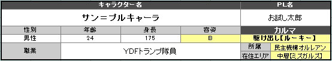

①プロフィールを決める。
＞＞NEXT
＞＞NEXT
名前、性別、年齢、容姿、身長、在住エリア、所属、職業を決めてキャラクターのプロフィールを決定しましょう。
自由に設定下さい。体重の設定は任意です。生い立ち・キャラクター説明で補足をお願いします。
↓エクセルのステータス算出表では以下の場所に名前など入力。

-
名前
- 日本系、中国系、欧米系などなんでもＯＫ。
-
性別
- 男性or女性。性別不明やオカマなどもＯＫ。
以下のランダム表から決定してもＯＫ。 -
年齢
- 設定自由。下記のランダム表から決定してもＯＫ。
ただしユグドラシルの歴史は１００年なのでそこも踏まえて設定をお願いします。 -
身長
- 設定自由。下記のランダム表から決定してもＯＫ。
あまりに巨大な身長はＧＭと相談下さい。 -
容姿
- Ｓ～Ｅから選択。
下記のランダム表から決定してもＯＫ。容姿の目安もランダム表で確認下さい。
容姿による補正はシステムには組み込まれていませんが、
ロールプレイの楽しみとしてご利用ください。
ＧＭ裁量で容姿をもとにボーナスを与えてもＯＫです。 -
在住エリア
- 在住エリアは
- 上層
- 中層
- 下層
- 不明
以上の４種から選択可能。
在住エリアによって行動範囲や制限が出る可能性がありますのでご注意ください。
不明というのは不特定多数のところに住んでいたり、
市民登録をしていない場合などを指す。
※在住エリアは所属の管轄エリアである必要はないが、
【司法機関グングニル】を選ぶ場合は在住エリア【不明】は選択不可。 -
所属
- 所属は
- 司法機関グングニル
- 民主機構オルレアン
- 抑制機構テセウス
- ルーン企業連
- チーム世紀末覇者
- 闇商会スヴァルトアルフ
- フリーランス
以上から選択できる。
各勢力については世界観を参照ください。 -
職業
- 自由に作成・選択してＯＫ。
現代社会における基本的な職業は選択できると思っていただいて結構です。
※外界と隔離された島であるため、航空士や宇宙飛行士などは選択不可。
下記の職業例一覧も参照下さい。表にない職業もＯＫです。
職業によってはロールプレイ時にはなんらかの恩恵が与えられる場合もあるでしょう。
|
性別ランダム表 | |||||
|---|---|---|---|---|---|
|
【 １ 】ｏｒ【 ６ 】 |
【 ２ 】～【 ３ 】 |
【 ４ 】～【 ５ 】 | |||
|
オカマ もしくは性別不詳など |
女性 |
男性 | |||
|
年齢ランダム表 | |||||
|---|---|---|---|---|---|
|
ダイス【 １ 】 |
ダイス【 ２ 】 |
ダイス【 ３ 】 |
ダイス【 ４ 】 |
ダイス【 ５ 】 |
ダイス【 ６ 】 |
|
～９歳 |
１０～１９歳 |
２０～２９歳 |
３０～３９歳 |
４０～４９歳 |
５０歳～ |
|
身長ランダム表 | |||||
|---|---|---|---|---|---|
|
ダイス【 １ 】 |
ダイス【 ２ 】 |
ダイス【 ３ 】 |
ダイス【 ４ 】 |
ダイス【 ５ 】 |
ダイス【 ６ 】 |
|
～１３９cm |
１４０～１５４cm |
１５５～１６９cm |
１７０～１８４cm |
１８５～１９９cm |
２m～ |
|
容姿ランダム表＆目安提示 | |||||
|---|---|---|---|---|---|
|
ダイス【 １ 】 |
ダイス【 ２ 】 |
ダイス【 ３ 】 |
ダイス【 ４ 】 |
ダイス【 ５ 】 |
ダイス【 ６ 】 |
|
【 Ｅ 】 |
【 Ｄ 】 |
【 Ｃ 】 |
【 Ｂ 】 |
【 Ａ 】 |
【 Ｓ 】 |
|
ブサイク・奇形 |
中の下。 |
普通 |
中の上 |
美形 |
超絶イケメン 絶世の美人 |
|
ある意味で誰もが振り向く。 |
ちょっと残念。どこかが惜しい。 |
あらゆる意味で一般レベル。 |
普通よりは見栄えが良い。 |
人目を惹くレベル。 |
誰もが振り向く美形。 嫌が応でも目立つ存在。 |
【 職業例 】
【 上層特色業 】
-
グングニル上議員
- 上層におけるグングニル内の政治家。
ユグドラシルにおける政策・法律などに携わるエリート。トップにアレク＝ハールバルズを置く。
全ての機関に対して権限が少なからずあり、ユグドラシルにおける最高レベルでの権力を持つ。
真に実力のある者しか席をおけない。
他職業から一線を画すため、ロールプレイには向かないので注意ください。
-
グレイプニル隊員
-
司法機関グングニルにある治安維持部隊の隊員。
能力者のみ加入が許され、かつ優秀な能力者ではないと登用されない。
現行犯・現場運用にて個人ではもっとも行使できる権限が高い。
反面、中層・下層の一般市民層からは畏怖の目で見られる事もしばしばである。
条件：司法機関グングニル所属 ／ 優秀な能力者であること
-
フラメル研究員
- 能力研究所フラメルの研究職員。
能力研究においては最高峰の研究所である。
ただし非常に多くの分野に枝分かれしており、職員でさえ研究部門を全て把握している者は一部である。
エリートである反面、変人の部類に見られる場面も少なくない。
条件：司法機関グングニル所属
-
ニーベルング広報員
- 上層におけるメディアの最先端。
記者やカメラマンが所属する中、情報工作員やスパイ要員も存在する。
情報を扱うエキスパート。
一般市民へのイベント・広報活動や慈善活動を行っている為、人気は上々。
反面、地位が高い者にほど嫌われている。
条件：司法機関グングニル所属
-
ルーン企業連社員
- ルーン企業連に連なる会社の社員。
これに所属している事は、ある種上層におけるエリートのステータスである。
システム上の公式会社はルーンカンパニー、ソウイルカンパニー、エイワズカンパニー。
その他の企業連所属の会社はある程度自由に作成して良い。
条件：ルーン企業連所属
-
ビフレスト空港職員
- 上層ビフレスト空港職員。
機体整備士や管制塔職員、輸入品の管理者・空港内の運搬職人などがこれに当たる。
外界に触れる数少ない窓口のため、職業としてのハードルは非常に高い。
なお、パイロット職は全て外界の者であり、ユグドラシル内には存在しない。
条件：司法機関グングニル所属、またはルーン企業連所属
-
ヴァナヘイム職員
- 上層の生産プラント職員。
人工野菜の栽培管理などをはじめ、食品加工、高級食品の管理などを行っている。
人工栽培技術の面から研究者として所属している場合もある。
条件：司法機関グングニル所属
-
ＹＤＦ中央隊員
- セントラルタワー勤務の上層においてもＹＤＦのエリート隊員。
権限的にもグレイプニル隊員と同等扱いの面がある。
厳格なエリート隊としての象徴でもある事から、グングニル所属が必須。
条件：司法機関グングニル所属
-
ＹＤＦエデン隊員
- 非能力者しか住むことのできないエデン特区を守るＹＤＦ隊。
自身もエデン特区在住かつノーマルである事が必須。
エデン特区内ではグレイプニルよりも権限があるエリートキャリア。
能力者に対して差別意識を持つものが非常に多く、又そのように教育されてきている。
条件：エデン特区在住、かつノーマルであること
【 中層特色業 】
-
ライラックホーム職員
- 現在は孤児院となっているかつてのオルレアンの本拠地、ライラックホームの職員。
孤児院としての仕事はもちろん、地域でのボランティア活動などを行う。
時折びっくりするほどの情報網を持っていたりする。
子供や中層市民からの信頼は中層最高レベル。ちょっと貧乏。
条件：民主機構オルレアン所属
-
スヴァリン局員
-
中層における治安維持や自治を目的とした管理局【 スヴァリン 】の局員。
情報を集約する部署でもあり、レジスタンス時代の流れを組んで足を使う局員が多いといえる。
中層での管轄権限は強いが、グングニルと衝突する場面も多い。
条件：民主機構オルレアン所属
-
バスターライラック隊員
- 中層の民間警備隊。
一応スポンサーとして上層がバックについてはいるが、
より市民に近い形で中層の警備にあたっている。
あくまで民間の警備隊のためＹＤＦより権限は低いが、
中層の能力犯罪の抑制に多大な貢献を果たしている。
その代わり出身などに拘らず所属できるため、メンバーは多種多様。
ボランティア活動なども含め、地域に密着した活動から中層市民からの信頼は厚い。
条件：なし
-
モーターソグニル職員
- 中層に限らず、ユグドラシル全体の修理組合の中枢。
エレベーターの常時点検をはじめ、代を重ねユグドラシルの維持に貢献してきた。
職人気質のメンバーも多いが、寡黙な彼らの信頼は３層に渡って厚いといえる。
条件：なし
-
二ザヴェリエール職員
- 中層のある動力プラントの管理職員。
電気系統をはじめた危険物取り扱いの資格も必要であり、エンジニアも多い。
日々の動力プラントのメンテナンスを行っている。
その他、新動力や新エネルギー開発・研究も行っている。
条件：司法機関グングニル所属、もしくは民主機構オルレアン所属
-
ウトガルド工場員
- ウトガルド工場地帯で働く者の総称。
中層に働き口であり、下層から出稼ぎにくる者も多い。
条件：なし
-
セスルームニル職員
- 中層の生産プラント職員。
畜産業が主であり、ユグドラシルの食卓を支える。
クローン豚の生産需要がもっとも多いらしい。
条件：なし
-
ＹＤＦトランプ隊員
- 中層にあるＹＤＦ隊の１つ。
主な警備エリアはウトガルド工場地帯でチーム世紀末覇者とよく暑苦しく衝突している。
正義感が強い者が多いが、その熱さゆえに空回りすることも多いＹＤＦ隊として認識されている。
民衆からの親しみは大きい。
条件：なし
【 下層特色業 】
-
ヘル親衛隊員
- ジョン・ドゥの私兵とも言える武装親衛隊員。
ユグドラシル内でも屈指の武器・武装を誇る。
軍閥のような組織性格を持つ。
在籍しているというだけで威圧感は最高レベルであるが、他勢力からしたら信頼感は皆無に等しい。
条件：抑制機構テセウス所属 ／ ジョン・ドゥに忠誠を誓える者 ／ 戦闘可能な者である事
-
ヨルムンガンド構成員
- ニーベルングに負けじとも劣らない情報力を持つ。
裏世界の情報においてはそれを凌ぐとも言ってもいいだろう。
ただし正規的な情報閲覧権限などはあまりなく、違法的なハッカー集団といった認識のされ方が強い。
情報源として重宝されるが、敵に回したくないという事から敬遠される事も多い。
条件：抑制機構テセウス所属
-
フェンリル隊員
-
ユグドラシルにおけるいわゆる「裏の仕事」を担う隊員。
それは殺人であったり、暗殺であったり、
はたまたユグドラシルにとって都合の悪い組織を潰すといった役目を担っている。
公式には「存在しない組織」のため、公には職業は明かせない。
知る者にとってはグレイプニル以上に畏怖される存在である。
又、柄の悪い面々が揃っているため上層からはすこぶる評判が悪い。
条件：抑制機構テセウス所属 ／ 戦闘可能な者である事
-
エーリヴァーガル組員
-
ニブルヘイム港を管理する漁業組合エーリヴァーガルの所属員。
ユグドラシルにおいて公式に外海に出ることのできる唯一の職業であり、
そのため非常に高潔であり神聖視されている職業。
組員も厳しく統制されており、彼らは漁師であり、厳格な軍人のようでもある。
あくまでテセウス管理下の組織のため、テセウス所属は義務付けられている。
所属する誰もが誇りを持ち、海に出ている。
条件：抑制機構テセウス所属
-
スヴァルトアルフ会員
-
下層における闇商会スヴァルトアルフに属するもの。
各種裏稼業に関わる者がほとんどである。
中にはスヴァルトアルフが子飼いとしているクローン兵や奴隷兵も含まれる。
条件：闇商会スヴァルトアルフ所属
-
ヘイズルーン闘士
-
スヴァルトアルフが運営する地下闘技場の闘士。
奴隷扱いの者もいれば、有名な人気闘士まで様々である。
ヘイズルーンで名の知れた者は裏の世界である程度名が知れ渡ると言える。
条件：なし
-
ＹＤＦ１３番隊員
-
下層の多くのＹＤＦがスヴァルトアルフと癒着している中、
唯一隊としてそういった権力に屈しないＹＤＦ隊。
荒くれ者が多く、粗暴で暴力的なＹＤＦ隊員といえる。
中には数少ない常識人がいる事も。
条件：なし
【 一般職業 】
-
ＹＤＦ隊員
-
警察機構『Yggdrasill Defense Force』。通称ＹＤＦ。
ユグドラシルの警察業。
日本警察というよりは、アメリカ警察に近いものとお考え下さい。
上層・中層では信頼度は高いが、
下層においてはスヴァルトアルフと癒着している事が非常に多く、その信頼感は怪しい。
-
世紀末覇者メンバー
-
チーム世紀末覇者所属の者。
モヒカンであるか、もしくはチームエンブレムを掲げている事だけが所属の条件。
上層・中層・下層に限らず全層に勢力を伸ばす。
無職が多いが、なぜかちゃんとした職業を持った上で活動している者もいる。
条件：チーム世紀末覇者所属
-
情報屋
- 情報を扱う職業。
その情報をどう扱うかはＰＬの手腕次第。
ユグドラシル内では比較的ポピュラーな職業。
-
探偵
- 一般的な探偵業。
収入はその手腕によって左右されてしまうだろう。
ユグドラシルにおいては自身の能力を活かしている者も多い。
-
何でも屋
- ユグドラシルでは存外に多い職業。
広く浅く、様々な仕事をこなす。
反面あまり収入が多いとは言えない。
-
会社員
- 一般的なサラリーマン。
ユグドラシルの世界でもサラリーマンはいる。
-
事務員
- 経理などを含め、事務業に従事する者。
手腕のある者はこの職業でも一定の地位を得る事ができるだろう。
-
秘書
- 秘書業。
会社業の花形の１つ。ある程度の有能さは求められる。
-
プログラマー
ハッカー
電脳管理者
電脳エンジニア - 電脳における情報を扱う職業。
ロールプレイの中でも電脳世界における判定では恩恵を得やすいと思われる。
電脳と呼ばれる分野において、脳科学者である場合もある。
-
エンジニア
技師 - いわゆる技術者。
物の修理など判定がある場合は恩恵を受けられるかもしれない。
-
学者
研究員 - ユグドラシルにはフラメル以外にも各種研究所が存在する。
それぞれ独自の研究所に所属、もしくは研究所自体を営んでいても良いだろう。
-
医者
看護師 - 一般的な医療従事者。
病院勤務でも良いし、個人経営でも構わない。
下層においては闇医者も多い。
-
弁護士
- このユグドラシルにも法律はある。
巨大なコミュニティーとしてルールはあるのだ。
そこで裁かれる者もいれば、弁護する者もまたいるだろう。
-
学生
- 一般的な学生。
ユグドラシルにおいても初等・中等・高等・大学課程は存在している。
学業レベルにいおいては上層がもっとも高いとは言える。
-
教師・教員
- 学校の教師、幼稚園の保育士など。
人の信頼を得やすい職業ではあるだろう。
-
記者
ジャーナリスト - 新聞やメディアなど、情報媒体に携わる職業。
人によっては気嫌いされる職種ではあるだろう。
情報の取得は自らの足からなのか、それとも優れた知識からなのか、
はたまた幅拾いコネクションからなのか。
その人その人によって様々なジャーナリストスタイルがある。
-
デザイナー
建築士 - 服や建物など、様々なものを産み出す者たち。
今なお広がりを見せるユグドラシルにはある意味で欠かせない職業である。
-
アーティスト
歌手 - 音楽に携わる者たち。
ユグドラシルの娯楽を支える。
-
タレント・モデル
役者・芸人・声優 - 演じる事やメディア出演などを職業とする者たち。
ユグドラシルにおいても娯楽は重要。
最近では電脳アイドルなども存在している。
-
作家
- 文章を書く事を職業とする者たち。
ベストセラーを生み出せるかはその実力次第。
-
作曲家
- 音楽を産み出す事を職業とする者たち。
奏でる音色はそのセンス次第。
-
画家
漫画家 - 絵を描き、産み出す事を職業とする者たち。
ここでは漫画家も同様の部類とする。
-
写真家
カメラマン - 様々な写真をとる事を職業とする者たち。
人を撮るのか、物を撮るのか、はたまた事象を切り撮るのか。
それはその人その人によるだろう。
-
武術家
武道家 - 己の体を武器と化し、それを扱う者。
個人で武術を極める者でもよし、インストラクターとして人に教授する者でも構わない。
-
美容師
- 美しさを求め、人に与える職業。
散髪・整髪などなど。ネイルアーティストなどもここに含める。
-
飲食業
- 飲食に携わる者。需要はあるが、なかなかに労働条件は大変だとか。
アルバイトも含める。
一般的な飲食業から高級店など、それは自由に決めて良い。
-
料理人
- おいしさを求め、人に与える職業。
飲食業とは一線を画し、あえて独立した職業としてここに記載する。
-
商店主
- 店を営む店主。
経営する店の内容は自由に決めて良い。
-
運送
配達業 - 複雑化がどんどん進行しているユグドラシルにおいて欠かせない職業。
これが滞れば様々な職種に影響がでる程であろう。
電脳犯罪もあるため、アナログな運送業はむしろ需要が高い。
-
運転手
- 一般的な運転手。
送迎やタクシーなど、様々な運転手を含める。
ホバーバイクなど、近未来的・ＳＦ的な乗り物の運転手でも良い。
-
フリーター
- 様々なアルバイトで生計を立てるもの。
ユグドラシルも世知辛い。
-
無職
- その名の通りの無職。ニート。
あえてこれを選ぶとロールプレイとしてちょっと心が痛くなるかもしれない。
-
宗教家
- ユグドラシルにも宗教は存在する。
存在する宗教は現代社会に準ずると思っていたただいて構わない。
又、新興宗教を創設するのも良いだろう。
-
占い師
- 占いを営む者。道を指し示す者。
能力による占い、占星術としての占い、
はたまたインチキ占い師まで自由です。
-
詐欺師
- 人を騙し、自らの益を得る者。
このユグドラシル、まともに生きるは馬鹿を見るってものさ。
-
ギャンブラー
- ギャンブルにて生計を立てるもの。
ユグドラシルにはカジノなども一部存在している様だ。
-
マフィア
- いわゆるヤクザ業。
土地の買収や抗争などを生業とし、人々に恐れられる。
-
殺し屋
- ユグドラシルは独自社会を形成しているとはいえ、
その根本は決してまともな社会ではない。
裏の世界ではこの様な仕事をこなす者が、まだまだいるのだ。
それなりの実力は問われる職業となる事だろう。ある意味で信頼がものを言うのだから。